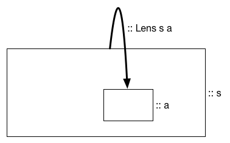
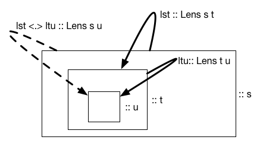

Chapter 26: Lenses
The wand chooses the wizard, Mr. Potter. It’s not always clear why. But I think it is clear that we can expect great things from you. After all, He-Who-Must-Not-Be-Named did great things. Terrible! Yes. But great.
Introduction
The idea of a lens is simple, it’s a type whose values somehow provides access to a constituent part of a complex value:

The particular form of Lens here is local to this lecture, as subsequent
events will lead us to deal with more complex types.
The choice of the word access conveys a sort of pedagogical malice: on first exposure, access seems to be about getters and setters, but then mutators can’t be far behind, as are other access patterns.
Having introduced the discussion of lenses via, “The idea of a lens is simple,” and knowing me, you might believe that there are things about lenses that aren’t simple. You’d be right. You might have heard something of lenses, and how “lens-heavy” Haskell code looks quite odd, even to experienced Haskell programmers. That’s right too. There is a division in the community as to whether lenses are worth the fuss, especially in as much as developing facility with lenses seems almost as daunting as developing facility with Haskell was in the first place. There’s a complicated story there, and we’ll reveal it in pieces as we go along.
Let’s start by considering a small pedagogical example. We want to model a classroom, so we have a simple type definition:
data Class = Class
{ title :: String
, professor :: Professor
}The Professor type is also complex, which we’ll model in
much the same spirit:
data Professor = Professor
{ name :: String
, coffee :: CoffeeCup
, chalk :: ChalkState
}We have complex types for CoffeeCup and Chalk:
data CoffeeCup = CoffeeCup
{ capacity :: Double -- liters
, quantity :: Double -- liters
}
data ChalkState = Whole | BrokenWith these definitions in place, we’re asked to write a function that
updates a Class value by having the prof take a sip from his coffee.
At this point, a C programmer working with an analogous set of
definitions might write this:
class.professor.coffee_cup.quantity -= 0.001; // 1 cc = 1 ml `and then turn to us, saying, “OK, Mr. Fancy Pants Functional Programmer, let’s see you do better.” It does not go well. Our first attempt looks like this:
sip :: Class -> Class
sip cls =
let prof = professor cls
cup = coffee prof
q = quantity cup
q' = q-0.001
cup' = cup { capacity=q' }
prof' = prof { coffee=cup'}
in cls { professor = prof' }Ouch! This is not functional programming’s finest hour, and functional programmers do not like it when procedural programmers laugh at them. This seems wildly cumbersome.
And it’s annoying too, for two somewhat different reasons: (1) we realize that we’re going to have to do a lot of this, e.g., writing code that models the prof refilling his coffee cup, or dropping his chalk and breaking it; and (2) we have a sense that the code above involves unwrapping a data structure to get at an inner value, modifying that inner value, and then re-wrapping the modified inner value to get a modified outer value. If we could somehow abstract out single steps of doing that, we’d have a compositional approach to the problem.
For example, consider
modQuantity :: (Double -> Double) -> CoffeeCup -> CoffeeCup
modQuantity f cup = cup { quantity = f (quantity cup) }The modQuantity function lifts a function that modifies a quantity
into a function that modifies a CoffeeCup. In effect, it is a
component-specific analogue to fmap. Much as we can compose fmap
with itself to lift a simple function into a context of nexted Functors,
so to can we compose these “component-wise fmaps” into a function that
reaches into the structure of a complex object, modifies a piece of it
(non-destructively, of course) and returns the updated complex object.
Thus,
modCoffee :: (CoffeeCup -> CoffeeCup) -> Professor -> Professor
modCoffee f prof = prof { coffee = f (coffee prof) }
modProfessor :: (Professor -> Professor) -> Class -> Class
modProfessor f cls = cls { professor = f (professor cls) }
sip' :: Class -> Class
sip'=
= modProfessor
. modCoffee
. modQuantity
$ subtract 0.001This isn’t code that’s going to make a procedural programmer jealous, but we
have good reason to feel better about ourselves, as we have a clear path to
implement the other mutators that are likely to be required: we provide atomic
fmap-like functions (mutators) for each component of a product type, and then
define mutators on complex types via compositions of the atomic mutators.
There are some things to be pleased about here, and some things to be disappointed in. Haskell’s record syntax does a good job of providing us with getters for algebraic data types, but poor job with setters and mutators. Much of the code above consisted of writing mutators, all with essentially the same structure (produce a modified value by modifying one of its components), but this similarity isn’t something we can capture with Haskell itself. But once we write those tools for ourselves, they can be combined in useful ways to build up access functions that work on more complex data values.
Indeed, we soon realize that our procedural programmer’s implementation
of sip is a bit glib: if the prof tries to sip from an empty cup,
they’re not going to end up with a negative amount of coffee. We can
easily modify our code to reflect the complexities of a more correct
computation:
sip' :: Class -> Class
sip'=
= modProfessor
. modCoffee
. modQuantity
$ \ q -> 0 `max` q - 0.001This isn’t a terrible challenge for our procedural programer’s code, but the transformation is less trivial, because while C provides mutation operators associated with the standard binary operations, it doesn’t have a simple syntax for describing more complicated mutations. Thus,
class.professor.quantity =
max(0.0,class.professor.quantity - 0.001);Even though this is shorter than what we wrote, our C programming friend instinctively understands that there’s something not altogether wholesome in have to specify the sequence of field records twice, a defect that the Haskell code avoids. He’s not sure that what we’ve gained justifies our conceptual overheads, but at least, we’ve got him mumbling about compiler optimizations, and he’s stopped laughing.
We don’t have the full power of lenses here, and we haven’t yet tried to build that power, but this initial investigation has provided some fruitful ideas, which will come back with surprising force later on.
Naïve Lenses
Our immediate goal is to develop a first class Lens s a type whose
values provide access to a component of type a within a value of type
s. To that end, we write:
data Lens s a = Lens
{ view :: s -> a
, set :: a -> s -> s
}A common pattern is that we’ll have a Lens s t, a value that given access to a
value of type s, gives us access to a constituent of type t, and a Lens t u, and we want to combine them to form a Lens s u. To do this, we’ll define
(<.>) :: Lens s t -> Lens t u -> Lens s u, a lens composition operator which
we can visualize as

and implement as
infix 9 <.>
(<.>) :: Lens s t -> Lens t u -> Lens s u
lst <.> ltu = Lens
{ view = view ltu . view lst
, set = \ u s ->
let t = view lst s
t' = set ltu u t
in set lst t' s
}We’ll also provide a mutator over defined in terms of our lens:
over :: Lens s a -> (a -> a) -> (s -> s)
over lsa f s = set lsa (f a) s where
a = view lsa s `With these definitions, let’s set about reworking our professor with coffee example.
First, we’re going to want to use names professor and coffee to
name lenses, rather than fields. Indeed, because of the way we’re going
to use lenses to organize access to components of values, we’re not
going to need the field names, except to define the primitive lenses,
so those field names can be “garbaged up” a bit. To that end, we define
module NewClasses where
import MicroLens
-- ========================================
-- Class
data Class = Class
{ _title :: String
, _professor :: Professor
} deriving Show
title :: Lens Class String
title = Lens
{ view = _title
, set = \ ttl cls -> cls {_title = ttl}
}
professor :: Lens Class Professor
professor = Lens
{ view = _professor
, set = \ prof cls -> cls {_professor = prof}
}
-- ========================================
-- Professor
data Professor = Professor
{ _name :: String
, _coffee :: CoffeeCup
, _chalk :: ChalkState
} deriving Show
name :: Lens Professor String
name = Lens
{ view = _name
, set = \ nm prof -> prof {_name = nm}
}
coffee :: Lens Professor CoffeeCup
coffee = Lens
{ view = _coffee
, set = \ cof prof -> prof {_coffee = cof}
}
chalk :: Lens Professor ChalkState
chalk = Lens
{ view = _chalk
, set = \ clk prof -> prof {_chalk = clk} }
-- ========================================
-- CoffeeCup
data CoffeeCup = CoffeeCup
{ _capacity :: Double -- in liters
, _quantity :: Double -- in liters.
} deriving Show
capacity :: Lens CoffeeCup Double
capacity = Lens
{ view = _capacity
, set = (\ cap cof -> cof {_capacity = cap})
}
quantity :: Lens CoffeeCup Double
quantity = Lens
{ view = _quantity
, set = (\ quant cof -> cof {_quantity = quant})
}
-- ========================================
-- ChackState
data ChalkState = Whole | Broken
deriving Show
-- ========================================There is a regrettable amount of boiler-plate in this code, but it does enable reasonably elegant solutions to the problems posed earlier.
sip :: Class -> Class
sip = over (professor <.> coffee <.> quantity)
$ \q -> 0 `max` q-0.001
dropChalk :: Class -> Class
dropChalk = set (professor <.> chalk) Broken
refill :: Class -> Class
refill = over (professor <.> coffee) fill where
fill cup = set quantity (view capacity cup) cupYet, if we were really honest with ourselves, we might have a twinge of
conscience. Our definition of over, which we use twice here, uses both of its
constituent functions. It uses the lens’s get function for the first time to
excavate a value of type a that may be buried quite deeply within a value of
type s. Having excavated value, it applies the function f to it, only to
have to turn around and dig the same hole again via an application of the lens’s
set to bury it. Moreover, we really can’t do any better, if view and set
are our only tools. So with a heavy heart, we contemplate adding a new over
field to our Lens type:
data Lens s a = Lens
{ view :: s -> a
, set :: a -> s -> s
, over :: (a -> a) -> s -> s
}And now, having thought of another access pattern (modification), we might
wonder what else we’ve missed. How about a modification that might fail, i.e.,
overMaybe :: Len s a -> (a -> Maybe a) -> s -> Maybe s? Or perhaps a
modification that takes place in an context with effects, e.g.,
overIO :: Lens s a -> (a -> IO a) -> (s -> IO s)? Suddenly, we’re looking at a lot more
complexity, and with a shaken confidence in our belief that we’ve
captured all of the access patterns we should care about.
data Lens s a = Lens
{ view :: s -> a
, set :: a -> s -> s
, over :: (a -> a) -> s -> s
, overMaybe :: (a -> Maybe a) -> s -> Maybe s
, overIO :: (a -> IO a) -> s -> IO s
}Of course, we can simplify the problem by generalizing the last couple of components:
data Lens s a = Lens
{ view :: s -> a
, set :: a -> s -> s
, over :: (a -> a) -> s -> s
, overM :: Monad m => (a -> m a) -> s -> m s
}This makes us happier, because there’s less to do, and less of a sense that we
might have missed something. Unfortunately, we can’t actually do this, because
the type of overM involves the type variable m which is out of scope, and so
this won’t type check. There is subtlety here. Haskell, as defined, allows
polymorphic types, but polymorphic type definitions require that free variables
on the right hand side of a definition occur on the left hand side, which is
exactly what m doesn’t do.
And why does this limitation exist? Haskell, as defined, allows for polymorphic expressions, but not for polymorphic values. The full type of any value has to has to be fully grounded.
But we want overM, as a value to retain its polymorphism. It would seem we’re
at an impasse. But programming language research continued after Haskell was first
defined, and efficient ways of implementing polymorphic values because feasible.
There is a language extension RankNTypes that enables this. Briefly, RankNTypes
enables the introduction of explicit uses of forall quantification over type
variables. With the RankNTypes extension enabled, the limitation that all values
must have fully grounded types is still present, but a fully grounded type can now
include an explicitly quantified variable, leaving us with the curious result that
a value can be simultaneously polymorphic and of fully grounded type. It’s a bit
head spinning, but let’s plow on…
data Lens s a = Lens
{ view :: s -> a
, set :: a -> s -> s
, over :: (a -> a) -> s -> s
, overM :: forall m. Monad m => (a -> m a) -> s -> m s
}Note that we’ll need to enable RankNTypes, either via an explicit directive
{-# LANGUAGE RankNTypes #-}or by using a language version (GHC2021 or GHC2024) that enables this extension
automatically. The later is an indication that the RankNTypes extension has been
in use a long time, has been stable, and has been found to be of fairly general use.
Indeed, the “trick” that allowed for the consistent use of reference variable in the
ST monad also relied on RankNTypes.
It should be clear that we can define over in terms of overM by performing
our calculation in the Identity monad, and then escaping from it.
over :: Lens s a -> (a -> a) -> s -> s
over lsa f s = runIdentity (overM lsa (pure . f) s)and this definition begs to be reworked by our usual trick of introducing a composition
and
over isa f = runIdentity . overM lsa (pure . f)Moreover, we realize that we can efficiently define set in terms of
over by “modifying” via a constant function:
set :: Lens s a -> a -> s -> s
set lens a = over lens (const a)This leaves us with
data Lens s a = Lens
{ view :: s -> a
, overM :: forall m. Monad m => (a -> m a) -> (s -> m s)
}Of course, we still have to implement (<.>), which turns out to be
surprisingly easy:
(<.>) :: Lens s t -> Lens t u -> Lens s u
lst <.> ltu = Lens
{ view = view ltu . view lst
, overM = overM lst . overM ltu
}and we have to figure out if we can implement overM. Let’s recall
the definition of the Class type:
data Class = Class
{ _title :: String
, _professor :: Professor
} The overM member of the professor lens will have type
overM :: forall m. Monad m
=> (Professor -> m Professor) -> Class -> m ClassSo we start:
overM f cls = _If we’re going to use f, we have to find a Professor to apply it to. The only
available candidate (and it makes sense here) is the _professor field of cls:
overM f cls = _ (f (_professor cls))which we might rewrite, according to our usual bias to introduce compositions, as
overM f cls = _ (f . _professor $ cls)This expression has type m Professor. We need to produce a value of type
m Class. How can we do this? A natural approach is via an fmap, and we
know this is ok because m is a Monad and so a Functor.
So
overM f cls = _ <$> (f . _professor $ cls)and we’ve reduced our problem to finding an expression of type Professor -> Class.
This is easy enough, we’ll modify our cls value to have the desired _professor
overM f cls = (\prof -> cls { _professor = prof} )
<$> (f . _professor $ cls)Our new, improved lens definition comes with significant tradeoffs. On the debit side, the boilerplate in defining lenses is indisputably uglier, cf.
professor :: Lens Class Professor
professor = Lens
{ view = _professor
, overM = \ f cls -> (\p -> cls { _professor = p})
<$> (f . _professor $ cls)
}This is not the sort of boilerplate that we’d be happy about having to write a lot of, but let’s set that aside for now, as we’re not done pulling rabbits out of our hat.
On the credit side, our lens have considerably more utility, allowing us to work with monadically wrapped data, and we do this all the time in Haskell.
Exercise Defining the lenses coffee and quantity, and show that sip
works as expected on a test case.
van Laarhoven Lenses
We’ve gotten pretty far, but a striking observation due to Twan van
Laarhoven is that we can go further still, and that it is productive to
do so. First off, let’s look at that definition of overM:
overM = \ f cls -> (\p -> cls { _professor = p})
<$> (f . _professor $ cls)We’re only using fmap here, and none of the specific operations that
Monad brings to the party. Thus, there’s no obvious reason not to
generalize this all a bit further, replacing Monad with Functor, and
renaming overM to be overF.
So here is Twan’s insidious question: We’ve observed that we can define over
from overM (and the same argument goes through for the more general overF)
by cleverly using the Identity type as our functor, and we can derive set
from over by using the const function. Can we somehow derive view as well,
by somehow choosing the right Functor?
If we could, it would have to be a peculiar type constructor, because it will have to
carry a value of type a out of m s, even though a doesn’t appear in m s.
But we can choose the right type constructor, and it’s Const,
which is defined in Control.Applicative:
data Const a b = Const { getConst :: a }
instance Functor (Const a) where
fmap f (Const a) = Const aThis is an odd type, indeed, with a dependence on a type which is
ignored, and an fmap function that is effectively a type-casting
version of the identity function. Still, it turns out to be exactly what
we need. First, we’ll reduce the definition of Lens to the type of
overF:
type Lens s a = forall f . Functor f => (a -> f a) -> s -> f sThis code change requires a minor adjustment to
over :: Lens s a -> (a -> a) -> s -> s
over lens f = runIdentity . lens (pure . f)as the Lens now is its overF function, which doesn’t require
unpacking any more.
And we can now define view:
view :: Lens s a -> s -> a
view lsa s = getConst $ lens (a -> Const a) sor, after a brief rap on the knuckles by the Code Transformation Fairy:
view lsa = getConst . lsa ConstWe also need to sort out our definition of <.>, but doing so results
in a bit of a surprise – composition of lenses (which are now just
functions from Kleisli arrows to Kleisli arrows) reduces to composition
of the lenses as functions, so <.> becomes dispensable. We can now
implement lenses with somewhat less, and somewhat less annoying boilerplate,
e.g.,
title :: Lens Class String
title f cls = (\s -> cls { _title = s })
<$> (f . _title $ cls)and implement sip as
sip = over (professor . coffee . quantity)
$ \q -> max 0 (q - 0.001) `Pretty slick. But we’re not done.
Practicalities
If we’re going to get serious about lenses, it’s time to stop this pedagogical
rolling of our own lenses, and to use a lens library that has seen some serious,
sustained attention. While there are other lens libraries, and legitimate
reasons to use them, we’re going to use Edward Kmett’s lens package. Please
understand that this is not small, and will result in surprising long initial
builds as lens and its dependencies are downloaded and built.
Best to resign yourself now.
But let’s see what’s gained, by looking at a relatively lightweight
adaptation of our code to use Kmett’s lens library:
{-# LANGUAGE TemplateHaskell #-}
module Main where
import Control.Lens
data Class = Class
{ _title :: String
, _professor :: Professor
}
data Professor = Professor
{ _name :: String
, _coffee :: CoffeeCup
, _chalk :: ChalkState
}
data CoffeeCup = CoffeeCup
{ _capacity :: Double -- liter
, _quantity :: Double -- liters
}
data ChalkState = Whole | Broken
makeLenses ''Class
makeLenses ''Professor
makeLenses ''CoffeeCup
sip :: Class -> Class
sip = over (professor . coffee . quantity) $ subtract 0.001
start :: Class
start = Class { _title = "cmsc-22311", _professor = prof } where
prof = Professor
{ _name = "Stuart Kurtz"
, _coffee = cup
, _chalk = Broken
}
-- is cup half full, or half empty?
cup = CoffeeCup { _capacity = 0.5, _quantity = 0.25 }
main :: IO ()
main = do
let end = sip start
print $ view (professor . coffee . quantity) endThe directive {-# LANGUAGE TemplateHaskell #-}, enables the use of Template
Haskell within this file. Template Haskell is a meta-programming system for
Haskell, i.e., it enables us to use Haskell to write Haskell, and incorporate
the resulting splices our source files.
The benefit of doing so is apparent from the makeLenses lines, which are
splices that build full sets of lenses for our datatypes. Haskell can’t do that,
but Template Haskell, with its ability to introspect over class definitions,
can. And we don’t need to know how it works, only how to create the splices we need.
Note too that the convention we’ve been using of naming fields within
records with initial underscores is enforced here—the splice function
makeLenses depends on it.
Kmett’s library is huge, and part of that is that he defines a
large variety of infix operators that work with lenses, e.g., (^.) for
flip view, (.~) for set, and (%~) for over. Thus, e.g., Kmett
would rewrite a few lines of our lines:
sip :: Class -> Class
sip = professor . coffee . quantity
%~ \q -> max 0 (q - 0.001)
main :: IO ()
main = do
let end = sip start
print $ end ^. professor
. coffee
. quantityNote especially the last expression within the do of the definition of main.
There’s a pun here between (.) as used by functional programmers to mean
function composition, and . as used in procedural languages as a field
selector for a product type, like C’s struct. Kmett is clearly smitten by this
pun, and he looks for opportunities to develop it further. Whether or not it is
even remotely a good idea to organize a library so as to make functional code
look like procedural code, and for the analogy suggested thereby to be a
faithful one, is a question over which people of good faith can disagree; but
clearly is one that adds to the overall controversy around lenses within the
Haskell community.
And still, Kmett isn’t really done… There are versions of the Kmett’s operators that act within a state monad, which is really the only sensible way to organize a simulation. To that end, we’ll define a simulation as follows:
sim :: StateT Class IO ()
sim = do
professor . coffee . quantity %= \q -> max 0 (q - 0.001)
professor . chalk .= Broken
q <- use $ professor . coffee . quantity
liftIO . putStrLn $ unwords ["quantity:", show q]
c <- use $ professor . chalk
liftIO . putStrLn $ unwords ["chalk state:", show c]
main :: IO ()
main = evalStateT sim start In this version of the code, we’ve dispensed with sip, and instead
code its effect directly in sim. The first line uses the (%=)
operator to modify the underlying state value. The second line uses
(.=) to effect an assignment, in much the same way. The third and
fifth lines use the use function to view a value (Haskell doesn’t
have unary operators, so Kmett can’t define one), and the fourth and
sixth do IO.
This code looks procedural, with the outermost professor lens
functioning in analogy to a local variable with that name in procedural
code.
s t a b’ed: Semantic Editor Combinators
I’ve made a few remarks about types. In Kmett’s lens library, the
lenses we’ve been dealing with are actually simple lenses, which can be
declared as Lens' s a. The actual
definition of Lens involves four(!) parameters, and has the form:
type Lens s t a b =
forall f . (Functor f) => (a -> f b) -> s -> f tThe point to this is that we may want to use setters or mutators that change the type of the outer structure, cf.,
data Box a = Box { _goody :: a }
deriving Show
makeLenses ''Box `Now
> let b = Box 1 :: Box Int
> set goody b "one"
Box {_goody = "one"}What happened here is perfectly natural – we set the value of a hole
to be a different type than it previously contained, with the effect of
producing a mutated value with a different type Box String than its
input type.
Concluding Remarks
This lecture has barely scratched surface of lenses. In particular, other data structures (tuples, lists, maps, set) can have lenses, and lenses are a part of a large and growing ecosystem of Optics which provide us new ways to see and manipulate data. This lecture isn’t really intended to teach you Optics so much as to let you know that they’re out there, and may worth learning depending on your programming requirements and style.
Remember our opening quote? The wand chooses wizard. Perhaps this is so. But the wizard has a lot of work to do learning the various incantations that, together with the wand, accomplish the magic the wizard intends. So it is with Optics.
References
I recommend Chris Penner’s “Optics by Example,” LeanPub.com, as a practical introduction to Optics in general.